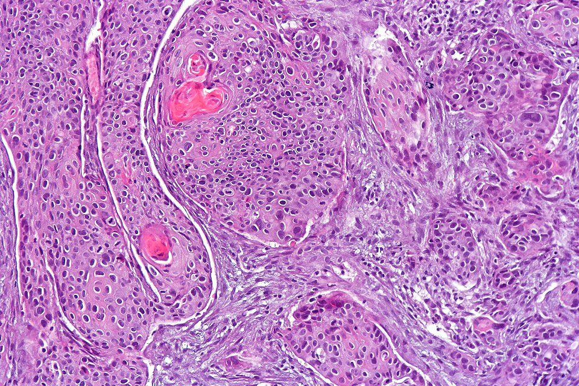

General information only. It does not replace advice from your care team and should not be used to choose a treatment.

,_high_mag.jpg){kind=link}
At a glance
| How common | About 50,000 cases a year worldwide; rising |
| Cause | HPV (mainly type 16) in 90% |
| Higher risk | People with HIV, men who have sex with men, women with cervical or vulval lesions, transplant recipients, smokers |
| Treatment | Chemoradiotherapy (mitomycin and 5-FU or capecitabine) |
| Survival | 70-80% at five years; over 85% for small tumours |
What it is
The anal canal is the last 3-4 cm of the digestive tract. Almost all its cancers are squamous cell carcinomas, like those of the cervix, developing from high-grade squamous intraepithelial lesions (HSIL) caused by HPV. It is different from rectal cancer, which is an adenocarcinoma and treated differently.
Prevention
- HPV vaccine, given to boys and girls.
- Screening in high-risk groups: the ANCHOR trial (2022) showed that finding and treating high-grade lesions in people with HIV cuts anal cancer by 57%. It uses anal cytology and high-resolution anoscopy.
- Not smoking.
Symptoms
Bleeding, anal pain or itching, a lump, feeling of a mass, discharge or bowel changes. It is often mistaken for piles or fissures; a problem that does not improve should be examined.
Diagnosis
Examination and digital rectal exam, anoscopy and biopsy; pelvic MRI, PET-CT and examination of groin nodes.
Treatment
- Chemoradiotherapy with mitomycin and 5-fluorouracil (or capecitabine) has been the standard since the 1980s (Nigro) and preserves the sphincter. Response is assessed at 26 weeks, because the tumour can take months to disappear.
- Local surgery only for very small tumours of the anal margin.
- Abdominoperineal resection with colostomy as salvage if it persists or recurs.
- Metastatic disease: carboplatin and paclitaxel, with retifanlimab or other immunotherapy where available.
Afterwards
Radiotherapy can leave urgency, diarrhoea, sexual problems and vaginal dryness; diet, physiotherapy and dilators help. Check-ups with examination and MRI for five years.
See also: Rectal cancer, Cervical cancer, Vaccines and cancer.
History · Medicapedia
Anal cancer in the history of medicine
How it was discovered, who studied it and how its treatment changed over the centuries, told on Medicapedia, our sister site on the history of medicine.
Read the history on Medicapedia ↗Sources
- Rao S, et al. Anal cancer: ESMO Clinical Practice Guidelines. Ann Oncol. 2021;32:1087-1100. doi:10.1016/j.annonc.2021.06.015
- Palefsky JM, et al. Treatment of anal high-grade squamous intraepithelial lesions to prevent anal cancer (ANCHOR). N Engl J Med. 2022;386:2273-2282. doi:10.1056/NEJMoa2201048
- NCI. Anal cancer. cancer.gov/types/anal
Recent guidelines and documents (2024-2026)
- SEOM and REDECAN. Las cifras del cáncer en España 2026 (Cancer figures in Spain 2026). Madrid: SEOM; 2026. seom.org
Sources reviewed and updated in November 2026.